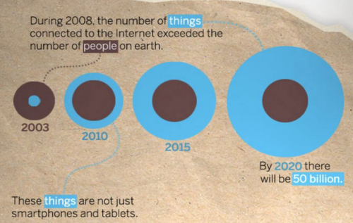

Número de dispositivos como smartphone, tablets, relógios inteligentes e chips ao nosso redor cresce a cada dia. Conhecemos o histórico sobre Internet das Coisas(IoT) verificamos o quanto as descobertas e amadurecimento das tecnologias contribuiram para evolução das coisas. A palavra coisas passa denominar objetos, animais, plantas, sistemas de automação.
Segundo a pesquisa da CISCO em 2008 o número de coisas ultrapassou o número de pessoas no mundo.
Antes de 2008 as pessoas interagiam exclusivamente com a internet por meio de dispositivo como notebook, smartphone ... , essa interação pessoa-maquina-internet denomina-se Internet das pessoas(IoP).
Após 2008 com número de dispositos mais expressivos, o conceito de objetos passam a ser percebidos com significado e propósito maior. Sendo idealizado como objeto dotado de inteligencia e autonomia para desempenhar funções que qntes precisavam de interação humana.

Fonte: http://postscapes.com/infographic-cisco-internet-of-things |O gráfico demonstra que cada pessoa tinha pela menos 2 dispositivos em 2008 e que 2020 esse número chegará na casa de bilhões. Esse momento foi um marco, pois antes de 2008 as pessoas interagiam com a internet por meio de dispositivo como exemplo notebook, smartphone ... , mas com o aumento de objetos esse cenário muda.
Objetos são criados com objetivo definido, ou seja, uma cadeira é um objeto na qual é criado para sentar e tipicamente tem pernas e pode ter encosto.Esse objeto poderia ser mais aproveitado e ganhar inteligencia cadeira inteligente. Fonte: http://postscapes.com/infographic-cisco-internet-of-things
Falamos de objetos inteligente, mas afinal o que é internet das Coisas ?
Objetos com tecnologias embarcadas de software, eletrônica, sensores e algum tipo de conectividade para viabilizar troca informações com outros objetos, serviços e possui uma identificação única na rede física de objetos.
Liga o mundo real com o virtual por meio de sensores.
As informações coletadas por todos os sensores não vale muito se não houver uma infra-estrutura para analisá-lo. Ao final os dados coletados geram informações mais precisas e por consequência um controle mais efetivo.
Internet das Coisas não é mito e sim realidade, ainda não atingimos o potencial ao extremo de IoT, mas já podemos disfrutar de alguns produtos nesse segmento. No IoTList você pode acompanhar lançamento de produtos.